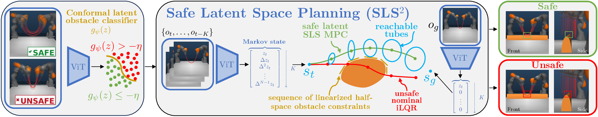

Abstract
We present SLS2, a framework for safe feedback motion planning from pixels using robust model predictive control in learned latent world models. Our approach trains an action-conditioned joint-embedding world model with compact Markovian latent states, enabling efficient gradient-based trajectory optimization through learned latent dynamics. To enforce safety for the true system despite imperfect latent predictions, we inform a GPU-accelerated System Level Synthesis robust MPC scheme with conformal prediction to obtain calibrated latent error bounds and robust latent-space constraint sets. We further learn and conformalize a latent constraint checker, allowing the SLS planner to impose probabilistic safety constraints during closed-loop execution.
TL;DR: SLS2 turns pixel observations into robustly safe actions by planning in learned latent world models with conformal uncertainty and SLS reachable tubes.
Method
SLS2 combines representation learning, conformal calibration, and robust feedback synthesis. A JEPA-style encoder maps images into compact embeddings, an MLP dynamics model predicts Markov latent-state transitions, and conformal calibration converts held-out prediction errors and learned constraint scores into planning-time uncertainty sets. The robust MPC layer then uses GPU-accelerated System Level Synthesis to propagate these uncertainty sets into reachable tubes and tighten constraints over the horizon.

Nominal Planning Results
Nominal planning from image observations across simulated manipulation tasks and real bimanual rope hardware. Our Markov state approach enables us to capture motion data, while our gradient-based nominal iLQR planner is able to stably reach the goal image.
Robust Planning Results
SLS2 propagates conformalized disturbances in the latent disturbances to provide robust constraint satisfaction. The visualizations below show the robust rollouts with the projected reachable-tube envelopes, compared with the unsafe nominal rollout. The table below demonstrates SLS2 has a higher rate of successfully completing task while remaining safe.
| Task | Safety ↑ | Robust Success ↑ | ||||
|---|---|---|---|---|---|---|
| SLS2 | HJ-filtered | LPB | SLS2 | HJ-filtered | LPB | |
| Reacher | 100.00% | 100.00% | 0.00% | 100.00% | 100.00% | 0.00% |
| OGBench Cube | 94.29% | 0.00% | 0.00% | 94.29% | 0.00% | 0.00% |
| Rope | 100.00% | 37.14% | 57.15% | 88.57% | 37.14% | 57.15% |
Citation
@misc{sls2_2026,
title = {Pixels to Proofs: Probabilistically-Safe Control in Latent World Models via Conformalized Robust MPC},
author = {Nath, Devesh and Srinivasan, Anutam and Yin, Haoran and Jiang, Ruitong and Fang, Jeffrey and Chou, Glen},
note = {Preprint},
year = {2026}
}